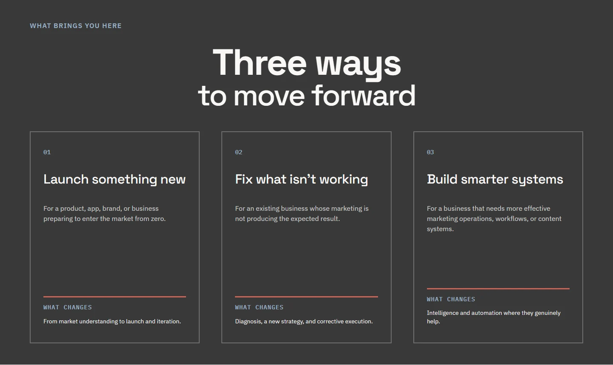

Co-founded business · 2026
Zemora
Building a brand across social and web
I co-founded Zemora to help businesses connect strategy with creative execution. I developed its brand identity, directed AI-assisted content production and helped bring the website from Figma to launch.
Explore selected work
The brand language
A connected identity across different ideas: conceptual imagery, tactile materials and a deliberate use of color.
Human insight.
Creative intelligence.
New ways forward.
Analytical pages gather and become steps, making the shift from evidence to strategy visible within one continuous scene.
My contribution & the brand system
I developed and refined the brand direction through dialogue with AI, selected directions and worked to keep the identity consistent across its applications. This board brings together the existing logo, palette, type specifications and a selected artwork.
How I worked with AI
I used a written guide to brief AI, choose a visual direction and review the result against the intended message.
“Single message the viewer should retain”
The brief separates the message, tension, desired shift and outcome before specifying the format and exact copy.
Developing the direction, guiding briefs, selecting outputs and directing revisions.
Exploration, drafting, visual generation and support with implementation.
Selected social work
Explore two complete sequences, followed by a highlight, a homepage carousel and a single-image post.
Intention into action
Instagram · Post 07 · 6 slides
6 slides · Scroll or use the arrows
A ball, a ramp and an obstacle carry the distinction between intended and actual behavior through a full sequence.
A connected launch
LinkedIn · Post 06 · 7 slides
7 slides · Scroll or use the arrows
One arch connects audience, positioning, credibility, journey and learning into a single visual story.
More visual directions
Select a cover to explore the complete work
A five-frame introduction connects evidence, insight, strategy and execution in one visual language.
A sequence of visual questions turns homepage clarity into a practical review.
An interrupted zipper makes the connection between different marketing decisions visible.
What brings you here
I organized this section around three reasons a business might visit Zemora. Select a marker to see how the section reads.

Visitor-led entry points
The three cards begin with a recognizable situation: launching, correcting or building better systems.
My contribution to the website
I worked on the website’s messaging and structure, developed layouts in Figma and guided implementation with AI assistance. The screenshot shows the live “What brings you here” section captured on 5 November 2026.
Have a content challenge in mind?
Let’s talk about the audience, the brief, and what needs to happen next.